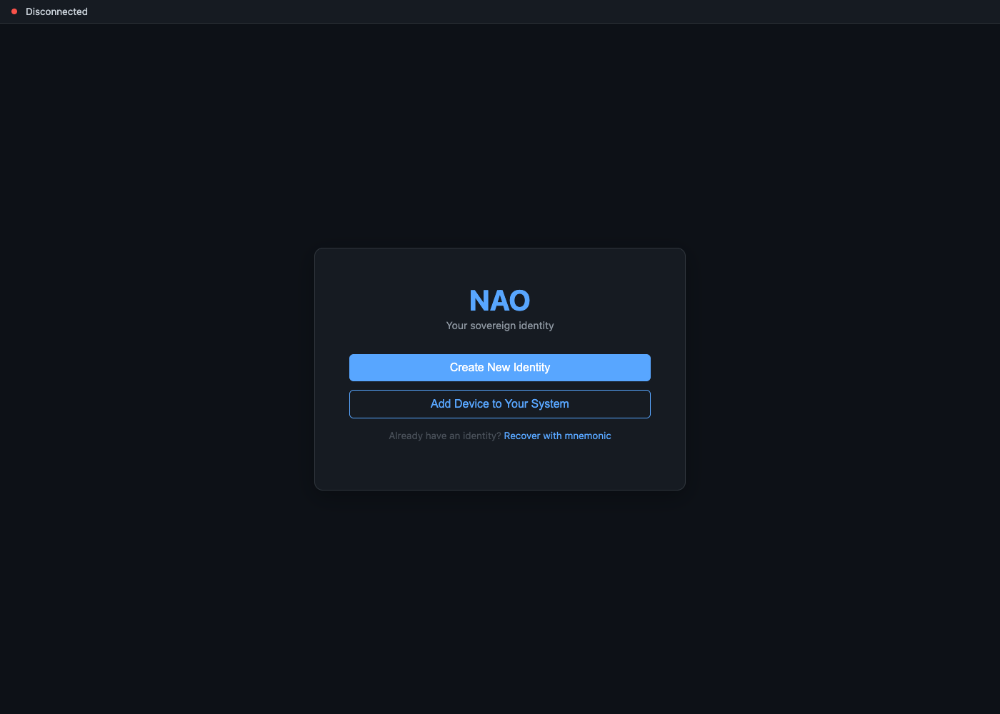

Four things changed this week
One per major area. The through-line is proof: proving you own an account, proving one attribute without the rest, proving a file arrived intact, and proving a permission was granted by a community rather than simply assumed by whoever wrote the feature.
You can prove you own your online accounts
Five platforms are covered — a GitHub gist, a GitLab snippet, a DNS record, Bluesky, and Mastodon with the wider Fediverse behind it.
Your files travel safely between two of your devices
A signed package crossed the network between two machines, arrived with its fingerprint intact, and was correctly refused to a peer that was not allowed to read it.
Records now describe themselves
Every stored entry now carries a description of what it is, so one general engine files all of them and twenty-two hand-written filing rules were deleted.
One permission shape covers every feature
A feature declares the kind of permission it needs, a community issues it through its own governance, and any service can check it with the same question.
Proving something about yourself with nobody in the middle

The feature: showing that an online account really belongs to you, proving one fact from a credential without handing over the rest of it, and holding a permission that a community granted rather than a server remembers.
Before: an account was yours because you said so, a credential proved everything it contained or nothing, and each feature kept its own private list of who was allowed to do what.
Now: you publish a proof the platform itself carries — a gist, a snippet, a DNS record, a post — and anyone can check it without asking you. The credential work and the permission work sit behind that same instinct.
Account ownership sounds like a small thing until you need it. Every introduction between strangers online eventually rests on it, and every scam that impersonates someone rests on its absence.
A claim anybody can verify is a different object from a claim you assert. The asserted version scales with how much people trust you, which is to say it does not scale. The verifiable version costs the reader one check and costs you nothing per reader.
Three things get blurred together whenever anyone says "verified": the claim someone makes, the evidence that backs it, and the party who did the checking. Most badges collapse all three into the third and never show the evidence, a distinction laid out in What a verifiable claim actually is.
The cost is that each platform is its own integration. Five surfaces means five ways to publish and five ways to read back, and a sixth platform is a sixth piece of work rather than a configuration change.
What was built. Verification expanded to five platforms in one wave: GitHub gists, GitLab snippets, DNS records, Bluesky, and Mastodon and the Fediverse alongside it. Each uses the platform's own publishing surface as the place the proof lives, which is why no cooperation from the platform is needed.
Verification of this kind works because the platform is already doing the hard part. It authenticated you when you logged in, and it will only let you write to your own gist, your own snippet, your own domain, your own timeline. The proof borrows that authentication rather than repeating it.
The choice of surface is the whole trick. A gist, a snippet, a DNS record and a post have nothing in common except that only the account holder can create one, and that is exactly the property a proof of ownership needs.
Five platforms rather than one is a deliberate choice too. A single provable account is a coincidence; several, held by the same identity, are a pattern that is expensive to fake. The value comes from the set, not from any one member of it.
The check that has no owner
The checking itself is designed so that no single party is the authority. A panel of peers is drawn by lot for each request, each member reaches a verdict in secret and reveals it only after committing to it, and the credential they produce is co-signed by the group rather than signed by any one of them.
Drawing the panel by lot is doing the same job a randomly empanelled jury does: making the outcome expensive to fix. Members cannot choose their accomplices, and the secret-then-reveal step stops them from reading each other's verdicts before committing to their own.
None of that makes collusion impossible, and the design does not claim it does. Reputation degrades on repeated bad calls, disputes can be opened against a verdict, and the honest goal is to make cheating expensive, detectable and self-limiting rather than unthinkable, as The green check nobody owns sets out.
That group implementation carries an honest status of its own. At the time of writing, its end-to-end browser run had 36 of 44 checks green, with the remaining multi-peer discovery and provisioning checks failing and under a fix design rather than quietly omitted.
Proving one thing without proving everything
A verifiable credential normally proves a whole claim: here is my signed document, take all of it. Selective disclosure lets you prove a single attribute from inside it — that you are over eighteen, that you control a particular handle — without revealing the remainder.
The everyday version of this is showing a passport to prove your age and handing over your address, your photograph and your document number as well.
The design keeps two signatures on the same credential rather than replacing the old one. A verifier that has never heard of selective disclosure validates the credential the ordinary way; a verifier that wants a single-field proof uses the other leg. The new capability is additive rather than a cutover.
The property worth caring about is unlinkability. Prove the same attribute in two places and nobody can tell it was the same person, because the proof does not carry a stable identifier that follows you between them.
That is a stronger guarantee than a privacy policy and a weaker one than most people assume from the phrase. It says the proofs cannot be correlated with each other. It says nothing about everything else in a request that might.
This one has an honest label attached, and it is sharper than "not shipped yet". The first phase runs a stand-in for the cryptography, with the same inputs and outputs so the real mathematics can drop into the same seam later. The workflow is real; the unforgeability and unlinkability arrive with that swap, and the write-up says so in its own words.
Nine ethics constraints sit between the mathematics and the product, and they exist because strong privacy is dual-use. One of them lets an issuer mark a field as always revealed — an expiry, a revocation pointer — so selective disclosure cannot be used to present a stale credential as a fresh one.
Another evaluates a presentation against what a particular community requires be disclosed, so a group can set a floor without taking away the holder's control of everything above it. Encoding those rules in the architecture rather than in a policy document is the part that makes them binding.
One permission shape instead of a list per feature
Permissions used to grow a new table per feature: one list of package operators, another of model hosts, another of payment approvers, each with its own idea of what revoked means and its own bug the day somebody forgot to check it.
The replacement is a single signed, portable credential carrying a claim about a relationship — this identity holds this role, with these capabilities, granted by this community. A package-operator credential and a model-host credential are the same envelope with different contents.
Four verbs cover the whole pattern: a feature declares the credential type in its own manifest, a community issues it through its governance, a service checks it with one question, and a sharing rule can gate access on it. The feature author writes none of the plumbing for the last three, as One credential pattern to wire them all describes.
Revocation is where credential systems usually go soft, so the lifecycle is explicit: issued, active, expiring, suspended, revoked. The check confirms a credential is active right now rather than confirming that one was issued at some point in the past.
Three hardening rules came from asking how the pattern gets abused. A credential whose holder collects contradictory attestations inside a rolling window suspends itself and records why, rather than operating until a human notices.
The other two guard the most dangerous moment, which is a brand-new community with no established trust. Issuing an operator credential then requires more than one steward behind it, and credentials issued during that bootstrap window expire far sooner than steady-state ones.
Honesty about the seam matters here as much as the design. The capability side — roles that authorise actions and gate access — is shipped and depended on by real features. The softer relationship types the same envelope was designed to carry are registered in the model with the machinery behind them only partly built.
The screen that stopped mixing two kinds of claim
The verification surface split into two named halves: Trusted Attributes, for things you have proven, and Trust Signals, for what others vouch for about you.
Those are different in kind, not in degree. One is checkable by a stranger with no relationship to you; the other is an opinion, however well founded. Rendering them in one list quietly invited the reader to treat them the same way.
Splitting them also removed the combined list rather than leaving it standing beside the new halves, so there is now one place to read what you have proven and one place to read what others say about you, and no third place where the two are mixed again.
Bytes that prove themselves need no trusted wire
The feature: moving your own files between two of your own machines, with proof that what arrived is what was sent, and with the right to read it decided by evidence rather than by a server's private opinion.
Before: getting data between devices meant a route through something in the middle, which authenticated the channel and then asked you to trust whatever came down it.
Now: a signed package travels directly between two daemons, its fingerprint is checked on arrival, and a peer without a role in the repository is turned away by a record both sides can inspect.
The interesting result is not that it arrived. It is that it was refused. A transfer that succeeds proves the pipe works. A transfer correctly denied to a peer without permission proves the pipe has a wall, and only the second one is a security property.
Devices belonging to the same person are the easiest case and the one most often routed through a stranger's server anyway. Two machines that already share an owner have no need of a third party to introduce them, and this week is the first time they did not use one.
What was built. A 607-byte git pack crossed the network between two daemons, verified with BLAKE3 on arrival, and was refused to a peer that was not permitted to read it. The run covered ten phases and passed 33 of 35 checks, moving four blobs, two branches and one tag.
Ten phases is a lot of ceremony for six hundred bytes, and that is the point: each phase is a place the crossing could have failed silently.
Two checks did not pass, and the honest reading is that this is a first crossing rather than a finished transport. Thirty-three of thirty-five is a real result and is quoted as it is rather than rounded into a claim of success.
The refusal is worth dwelling on because refusals are hard to test and easy to skip. A permission check that has never been observed saying no is a permission check nobody has evidence for, and it will pass every test written against the happy path right up until it matters.
Three questions, answered separately
The design pulls apart three things that a normal clone welds together. Who am I talking to, are these the right bytes, and am I allowed this repository are separate questions here, and each gets its own answer rather than being delegated to the connection.
The transport is treated as a dumb pipe whose only job is to carry bytes between two machines addressed by identity rather than by hostname. That narrowness is deliberate: the moment a network stack becomes responsible for correctness, data integrity is coupled to whatever the network did that day.
Integrity is the hash. The receiving daemon re-computes the fingerprint of what arrived and compares it to the address it asked for, so the guarantee survives a hostile relay, a truncated stream, or a delivery by any route at all, a layering The pack arrives walks phase by phase.
Authorisation is a signed record rather than a server's decision. The repository's history records which identities hold which roles, every entry is signed, and the answer to "may this peer read?" is evidence either side can check instead of a verdict one side pronounces.
Why the size of the pack is the point
Six hundred and seven bytes is a deliberately unimpressive number. The first crossing of a network boundary is not about throughput; it is about whether every piece of the chain — signing, addressing, transport, verification, authorisation — is present and agrees with the others.
Once a small object makes it across with its fingerprint intact and an unauthorised peer is turned away, the remaining work is scale and speed. Before that moment, every performance figure would be measuring a system that does not yet do the thing.
BLAKE3 is the fingerprint function here, and its role is narrow: it says the bytes that arrived are the bytes that left. It says nothing about who sent them — that is the signature's job — and nothing about whether the recipient should have them, which is what the refusal tested.
What is not yet demonstrated is anything larger, faster, or repeated. A single small crossing is a beginning, and treating it as a transport would be reading far more into thirty-five checks than they support.
The same idea, applied to large files
Naming a file by its content rather than its location is the move underneath both the code transfer and the model-distribution work that landed alongside it. A location tells you where bytes came from; a content address tells you what they are, and lets you check the claim yourself.
Model storage landed that week as raw blobs addressed by hash, with a matching remove operation so a node can drop a copy it no longer needs. Because the address is the content, deleting your copy and the file continuing to exist elsewhere are not in conflict.
A discovery path let one machine ask the network who holds a given blob and fetch it from whoever answers, then re-check the bytes on arrival. There is no step in that flow where the asking machine has to trust the answering one, a walkthrough given in How to download a file you can actually trust.
Model weights are stored unencrypted on purpose, which is a choice worth stating rather than hiding: they are large public artifacts rather than secrets, and encrypting them would cost processing time and defeat sharing identical copies between nodes.
Separate from correctness is permission, and the design puts an approval step in front of a fetch so that pulling and running a model a peer offers is a deliberate decision. That gate was in-flight work rather than a finished switch, and the distribution path as a whole was in testing.
What this means, in plain terms
Most of what lands in a week belongs to the thing it landed in. A few things generalise past it. These five are the ones this week actually paid for.
Prove the claim, not the document
A credential normally proves everything it contains at once. The selective disclosure work, landed this week behind nine ethics constraints, lets one attribute be proven while the rest stays sealed and unlinkable between uses. Design proofs around the question being asked, not around the paperwork that happens to answer it.
A test that only proves success proves half the system
The cross-device transfer run checked that a signed pack arrived intact and that an unauthorised peer was refused it. Only the second check tests the boundary; the first tests the plumbing, and a boundary nobody has watched say no is a boundary nobody has evidence for. Every permission needs a test that watches it say no.
A rescue path is an attack path wearing better clothes
An authority that can restore your account must decide, on its own say-so, that you are you — and the same decision can hand you to somebody else. The answer taken here splits recovery among people you chose, none of whom can act alone. Any power that can give an identity back can give it away.
Let data describe itself, then decide what it may not say
Entries now carry their own type, so one engine can file any of them. That only works because the engine overrides three things the payload does not get a vote on: which log it came from, which entry it was, and who signed it. When you let data describe itself, name the parts of the description that belong to the host, not the writer.
Two kinds of claim need two places on the screen
The verification surface now separates Trusted Attributes, which a stranger can check, from Trust Signals, which are other people's opinions. Mixed into one list, the checkable and the vouched-for read as equally solid. Where a reader cannot see the difference, they will assume the stronger of the two.
How much healthier is it than a week ago?
Three of the five figures above have no previous value, because nothing equivalent existed a week ago. Each shows its value alone rather than inventing a baseline to subtract from.
The commit figure is quoted as a range because that is how it was verified: the window's count across all branches falls between 3,500 and 3,800, and the per-day tally was derived from the dated log rather than read off a printed count. High confidence, not a receipt — and the distinction is the reason the number carries a tilde.
Feature work concentrating on a weekend is a shape, not a virtue. It is recorded here because it explains why the per-day figures look lopsided, not because a Saturday is a better day to build things than a Tuesday.
Net lines are not quoted. Much of this window's diff is removal: twenty-two hand-written filing rules gave way to one general engine, and twenty compatibility shims came out of the boundary between layers. A net figure would report all of that as absence of work, when it is the week's largest structural change.
Replacing twenty-two hand-written filing rules with one engine is not a saving, and is not quoted as one. The parser, the name-space registry, the wrapping path and the handler pipeline all had to be written to make the general engine possible, and every one of them is new work that arrived with it.
Seventeen product-flow gaps closed across six milestones is the least photogenic figure here and possibly the most useful. Each one is a feature that existed and could not be reached.
The human-visible landings are the handful named in this report, not the headline commit count. A large share of the week's feature work fell across one weekend — the verification waves, the first cross-daemon transfer, the model-distribution push and the integration wiring all land in those two days.
Twenty compatibility shim files were deleted as part of tightening the boundary between layers. A shim is a promise to clean up later, and later is the part that usually never arrives.
you can now prove you own accounts on five platforms and prove one attribute without the rest, a signed package crossed between two of your own machines and was correctly refused to a peer that should not have it, records learned to describe themselves so one engine can file any of them, and permissions became one portable credential a community grants.
Three honest notes.
Two of the thirty-five transfer checks did not pass. The run is reported as 33 of 35 rather than as a success, because a first crossing with two open checks is what actually happened.
Several efforts reached their finished state as an eventual status rather than within this week. Some of the work counted as finished was still mid-flight on these seven days, and those are called out in their own section below rather than folded into the shipped list.
The selective-disclosure mechanism runs a stand-in for its cryptography in this first phase. The plumbing and the ethics layer are real and tested; the privacy guarantee that gives the feature its name is designed and not yet proven by the mathematics in production.
What changed, area by area
Everything that moved this week, in rough order of how much of it moved. Per-area file counts are not available for this window, so each area is named without one rather than with a figure that cannot be reproduced.
Ownership proofs expanded to five platforms — GitHub gists, GitLab snippets, DNS records, Bluesky, Mastodon and the Fediverse — alongside a zero-knowledge wave and the surface that presents a proof on the platform itself.
The expansion reached roughly eighteen verification types by the day after this window closed.
Verification verdicts are reached by a panel drawn by lot per request, committed in secret before being revealed, and co-signed so that no single member holds the key that signs for the group.
Reputation degradation and a dispute path back it up; its end-to-end run stood at 36 of 44 checks green.
The surface split into Trusted Attributes and Trust Signals, so what you have proven to a stranger no longer sits in the same list as what someone else says about you.
The old combined list was removed rather than left standing beside the two new halves.
A 607-byte signed git pack crossed between two daemons, verified with BLAKE3 on arrival, and was refused to a peer without permission: 33 of 35 checks across ten phases, carrying four blobs, two branches and one tag.
Entries now carry their own type and structure, so one general engine files any kind of record and the twenty-two hand-written filing rules it replaced were deleted.
An entry may carry at most five hundred facts and one megabyte, and the cross-feature query index it enables is opt-in and read-only. ( Records that describe themselves .)
One signed credential type now covers package operators, model hosts, build-runner enrolment and the payments surface, with a lifecycle that distinguishes active from merely issued.
Softer relationship credentials share the envelope with their machinery only partly built.
Seventeen gaps between features that existed and features that were reachable were closed across six milestones, covering the agent-as-peer surface, schema discovery, the curator role, contacts and memory packs.
Built-but-disconnected is the most expensive state a feature can sit in, because it costs everything and delivers nothing.
Signature machinery was wired into the verifiable-credential pipeline behind nine ethics constraints, in a dual-proof shape so existing verifiers keep working, with 71 tests over the first phase.
That phase stands in a simulation for the real mathematics; the mechanism landed, the privacy guarantee has not.
One community's data shapes can now be published as catalogue entries with a content fingerprint, addressed and fetched with that fingerprint re-checked, searched, and adopted through a reviewed fork rather than a silent import.
Nine boot-critical types can never be forked, and compatibility checking is flat and flags what it cannot yet judge. ( Why your data model shouldn't be a silo .)
The resolver replaced a greedy strategy with a real backtracking solver, so it finds a workable set instead of getting stuck at the first dead end.
Landed, with its final phase tick lagging slightly behind.
Rebuilt with categorised navigation, tables that render, and a search hook covering everything published.
Documentation that cannot be searched is documentation that gets asked about instead of read.
A published identity method was adopted rather than a bespoke one designed, taking its self-certifying name, its commit-to-your-next-key rotation and its witness idea, with web publication made optional because a being is often offline.
( An identity whose whole history you can check and The issuer who could restore you .)
Twenty compatibility shim files were deleted as the boundary between layers was tightened.
Shims are how a boundary erodes, and the only reliable fix is removal rather than documentation.
Four tributes were written this week, and they are reading rather than code: the runtime that grants a program nothing until it asks ( Deno ), the tree that can be reorganised concurrently without breaking ( Loro ), the libraries that made conflict-free merge ordinary and proved where it stops ( Automerge and Yjs ), and a web built around the person rather than the app ( AD4M ).
None of those projects built any of the work above; each of them shaped a decision in it, and the tributes say where the paths part.
Landed but not shipped
Five efforts sit here. Each did real work this week and none of them is finished. Reading a landed milestone as a delivered feature is the specific error this section exists to prevent.
Blob storage for models, a removal path, a peer-to-peer discovery lifecycle and a first real multi-daemon distribution test all landed, much of it explicitly marked work in progress.
The approval gate in front of a fetch was design intent under construction, and the blob storage is unencrypted by choice.
Its five milestones landed this week with 89 tests behind them, after a three-agent threat and failure-mode audit whose findings shaped the address resolver and the reserved-type list.
The deep compatibility cases are surfaced as caveats rather than judged.
The manifest-curator role landed with five milestones and tests.
The first phase, 71 tests and nine ethics constraints are wired into the credential pipeline, with the real cryptography deferred to a second phase behind an unchanged interface.
The presentation surface was opened this week and is still in the backlog.
One milestone reached roughly 80% handler coverage with 34 integration tests; another added extended end-to-end vault-flow tests.